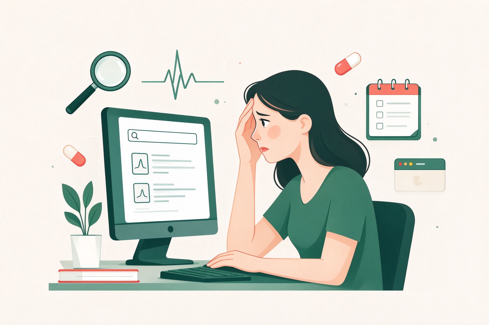

搜着搜着，怎么更焦虑了？
网络疑病症（Cyberchondria）——一种被「在线搜索」放大的健康焦虑。这里有理有据的知识、可自查的量表，还有一个不会顺着你焦虑往下说的 AI 问诊整理助手。

网络疑病症：不是「想太多」，而是被机制放大的循环
一个词源于 1999 年《华尔街日报》的概念，如今已覆盖全球数以亿计的在线健康信息搜索者。
“出于对健康的困扰或焦虑，在网上过度或重复搜索和健康相关的信息，结果扩大了这种困扰或焦虑的症状。”
——丁佳丽、杨智辉（2015）《网络疑病症：概念界定、影响因素与干预方法》综合代表性定义后的界定
说明：网络疑病症并非正式的临床诊断术语，而被视为互联网环境下普遍存在的一种焦虑现象（肖鹏、张雨龙，2025）；它与「网络成瘾」有相似性，但核心差异在于其驱动是健康焦虑而非对网络本身的依赖（丁佳丽，2015）。
它有多普遍？
大学生反复搜索健康信息后「更担忧」「更焦虑」的比例（金童林等, 2020）
一项针对印度 IT 员工的研究中，网络疑病症的发生率（Makarla 等, 2019）
个体花费大量时间反复搜索疑似症状；45% 搜索后立即寻求医生建议（Ivanova, 2013）
个体经常搜索「与自己相似的个案治疗经验」或「医学诊断经验」（Ivanova, 2013）
中国网民中会利用网络搜索健康、医疗、疾病信息的人群比例（2010 年 12 国调查）
网络 CBT 干预后网络疑病评分的效应量（Hedges g），显著优于对照组（Newby & McElroy, 2020）
哪些因素把「搜索」变成了「疑病」？
心理特质、认知方式与信息环境共同作用。下面前六项来自丁佳丽与杨智辉（2015）的系统梳理，后两项来自近年实证研究。
健康焦虑（起点）
对躯体感觉做「最坏解释」的倾向。高健康焦虑者更频繁、更久地搜索健康信息，并从搜索中体验到更多消极结果——它是网络疑病最重要的前因。
无法忍受不确定性（IU）
对「未知」高度敏感的个体，会因网上模糊的术语、矛盾的结论而更焦虑，为找到「确定的真相」持续搜索——不确定性反而被信息放大。
完美主义特质
希望搜索到「能解释一切」的信息。面对互相矛盾的结果，宁可忍受焦虑也要找到完美答案，于是搜索难以停止。
认知偏向（三重放大）
注意偏向：优先看到严重疾病；解释偏向：把模糊症状解读为重病；记忆偏向：只记得消极结果。三者共同把普通症状「放大」。
信息可信度知觉
网络信息鱼龙混杂。个体花大量时间辨别真伪，而「是否信任某个网站」会改变搜索后的焦虑走向——信任的网站反而可能带来更高担忧。
搜索排名与技术
严重疾病内容点击多→排名靠前→被更多人看到→更焦虑→再点击。排名算法放大了「恐惧信息」的可见度，用户却常把排名当概率。
健康信息过载
信息太多、互相冲突，超过个体的处理能力。过载通过「问题性网络使用」与「心理不适」的独立及链式中介，推高网络疑病水平。
元认知信念
「担心疾病能保我安全」「我永远控制不了自己的担忧」这类关于思考的信念，即使没有既往健康焦虑，也能催生网络疑病。
因素的分层：哪些是「根」，哪些是「果」？
李少华（2023）用解释结构模型（ISM）+ 交叉影响矩阵（MICMAC）把 18 个因素梳理成三层递阶结构——治理要从「根源层」入手。
根源层 = 高驱动力因素：干预健康信息素养、平台监管、医疗可及性与家庭功能，能同时撬动多条中间与直接路径（李少华，2023）。
为什么「越查越怕，越怕越查」？
四条实证路径 + 一个自维持循环，解释网络疑病的「黏性」。
网络疑病循环：一个会自我强化的环
Health anxiety → Search → Anxiety ↑ → Search again
M1寻求安心，反被吓到
搜索本为「求安心」，但结果不可控——看到坏消息后焦虑升高；而少数一次「安心」的体验会强化下次再来搜索的行为（Salkovskis 认知—行为模型）。这是循环最底层的动力。
M2排名的「恐惧放大器」
用户倾向点击排名靠前的链接，严重疾病内容因高点击排名更靠前，形成「越吓人越靠前、越靠前越被看」的正反馈。个体把排序当概率，普通症状也被解读为罕见病。
M3情绪与搜索的恶性循环
网络疑病与焦虑、抑郁、压力显著正相关（r = 0.27~0.34）；负性情绪反过来又推动继续搜索，主观上维持了疑病倾向（金童林等, 2020）。
M4过载的双重路径
健康信息过载一方面经「问题性网络使用」、另一方面经「心理不适」推高网络疑病（独立中介 + 链式中介）；电子健康素养高者可缓冲这一影响（肖鹏 & 张雨龙, 2025）。另一路径：过载经反刍思考与健康信息回避传导（王浩宇等）。
M5元认知：想法的「开关」
积极元认知（「担心疾病能保我安全」）与消极元认知（「思维—疾病融合」「我控制不了担忧」）是发展的认知基础；「何时停止搜索」的自我规则（stop rules）则是维持因素（Fergus & Spada, 2018）。
M6信息环境的加速器
个性化推荐与信息茧房让「恐惧内容」反复出现在信息流中；平台推荐算法、AI 健康问答的异常使用，作为环境因素放大个体焦虑（李少华, 2023；周依萌, 扎根理论）。
研究者如何「测量」它？
目前没有临床诊断标准，但已有多个经过信效度检验的自评工具。最常用的是《网络疑病严重度量表》（CSS）及其简版。
| 工具 | 结构与题量 | 测量学指标 | 中文版 |
|---|---|---|---|
| CSS-33 网络疑病严重度量表 | 33 条目 · 5 维度：冲动、痛苦、过度搜索、寻求专业帮助、质疑医学援助（McElroy & Shevlin, 2014） | 内部一致性 α = 0.94；与健康焦虑、压力正相关 | 未广泛汉化，部分维度（质疑医学援助）建议不计入总分 |
| CSS-12 简式网络疑病量表 | 12 条目 · 4 维度：过度关注、搜索焦虑、寻求帮助、负面干扰，5 点计分（McElroy 等, 2019） | 信效度良好；与 SHAI、IUS、DASS-21 正相关 | 已有中文版（金童林等, 2020），见下 |
| CSS-15 | 15 条目版本，从 5 个原始维度各取 3 条（Jelenchick 等） | 结构效度良好 | — |
| 4 条极短量表 | 仅 4 条目的筛查性工具 | 适合快速筛查，信息量有限 | — |
你也可以到「自评自查」页，用参考 CSS-12 维度结构设计的 12 题做一次自我了解——它不是正式量表，不替代专业评估。
三层干预：技术、教育与心理
丁佳丽与杨智辉（2015）提出干预可从三个层面入手；近年 iCBT 与「减少危害」策略提供了更具体的证据。
让「信息流」更可信
- 搜索引擎把「专业性与可靠性」纳入排名算法，降低恐惧内容曝光
- 平台监管健康信息质量，减少不准确、误导、过时的内容
- 开发科学的健康咨询系统，替代「症状进搜索框」
- 个性化推荐增加克制机制，避免信息茧房式焦虑喂养
提升健康信息素养
- 学会评估信息源：优先权威来源（如默沙东诊疗手册、机构指南）
- 降低对网络的期望：网络给「信息」，不负责给「安心」
- 批判性看待搜索结果：排序 ≠ 概率，矛盾结论 ≠ 你患病
- 电子健康素养高者，能缓冲信息过载对疑病的影响（肖鹏等）
循证心理疗法
- 认知行为疗法（CBT）：健康焦虑的循证金标准，效应量大（Cochrane g = −0.86）
- 网络化 CBT（iCBT）：6~12 模块在线完成，网络疑病评分显著下降（g = 1.09）
- 暴露与反应阻止：减少「反复查证、寻求保证」行为
- 认知偏向矫正、正念与接纳承诺（ACT）作为补充方向
- 药物仅限医生处方：SSRI 证据有限，与 CBT 疗效相当（不自行用药）
个人可以立即做的「减少危害」清单
参考预防策略（Menon 等, 2020）与「供需双侧」思路整理——先管住行为，再处理情绪。
管住搜索行为
- 给搜索设上限：每天最多 1 次、每次 15 分钟，并设「停止规则」
- 只查 1~2 个权威来源（如默沙东诊疗手册），不横向铺开
- 搜索前写下「我想确认什么」，避免开放式浏览
- 用「记录症状 + 就诊提问」代替「搜答案」
照顾情绪与就医
- 区分「信息」与「保证」：网络给信息，安心来自专业评估
- 焦虑持续、影响生活时，主动寻求心理科/精神科评估
- 把担忧写下来带去医院，比反复搜索更有效
- 识别错误前提：普通不适 ≠ 严重疾病，先看常见原因
填一个模板，得到一份「去就诊前」的整理稿
它不诊断、不开药、不顺着你的焦虑说。它只做三件事：把你的情况整理成医生看得懂的结构、标出该警惕的「红旗信号」、并给出默沙东诊疗手册（MSD Manuals）的核对入口。
在线自查：你的「搜索—焦虑」循环有多紧？
以下 12 题参考《简式网络疑病量表》（CSS-12，McElroy 等，2019）的四个维度结构（过度关注、搜索焦虑、寻求帮助、负面干扰）自编，仅作自我了解，不是正式心理量表，也不构成任何诊断。
每一条结论，都可追溯到文献
本页知识库内容基于以下知网文献整理（保存于「网络疑病症 + 健康焦虑 + Cyberchondria」资料夹），AI 问诊的验证入口指向《默沙东诊疗手册》。
直达《默沙东诊疗手册》（MSD Manuals）
1899 年首版，全球使用最广泛的医学信息资源之一，中文站向专业人士与大众免费开放。